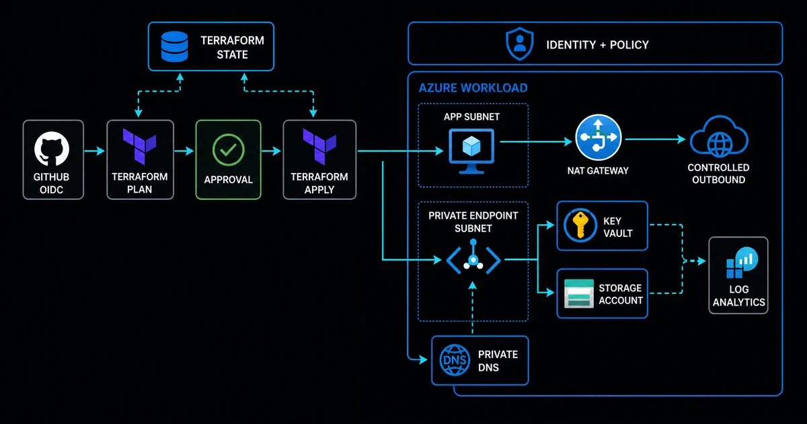
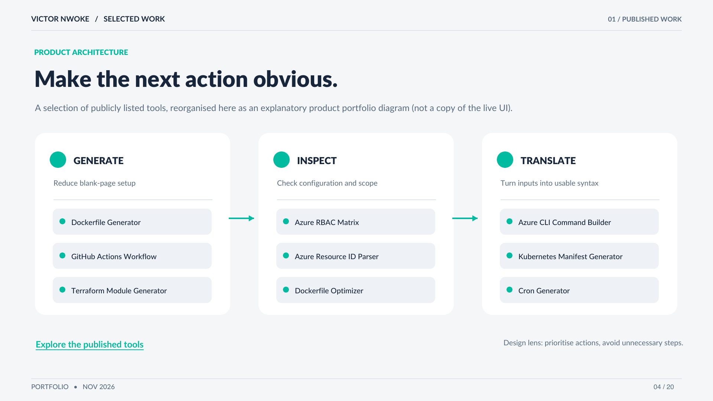
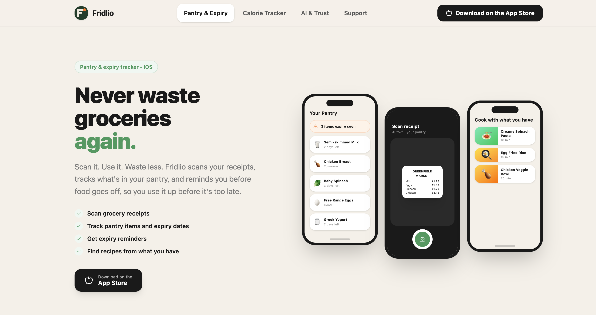

Published Cloud Tech guide01 / PUBLISHED / PUBLIC
Cloud Tech by Victor
A live knowledge and utility platform for Azure, Terraform, Linux, Kubernetes and CI/CD. Guides make scope, verification, recovery and cleanup explicit.
VICTOR NWOKE · CREATIVE SYSTEMS · 2026
Product design, technical communication and AI evaluation from public learning systems to transparent portfolio demonstrations.
Explore01 / POINT OF VIEW
Published work is foregrounded. New portfolio concepts are clearly labelled. I build clear briefs, reference artefacts and practical rubrics that make quality inspectable.
02 / SELECTED STUDIES
Published technical work and
clearly labelled design demonstrations.

Published Cloud Tech guide01 / PUBLISHED / PUBLIC
A live knowledge and utility platform for Azure, Terraform, Linux, Kubernetes and CI/CD. Guides make scope, verification, recovery and cleanup explicit.

Architecture and information design02 / PUBLISHED / PUBLIC
A product-design reading of the live Cloud Tech utility directory: structured inputs, useful outputs, explicit limits and task-specific language.

Public Fridlio product page03 / PUBLISHED PRODUCT / CASE STUDY
A published pantry and expiry product. The visual shown is the public Fridlio product page; the linked portfolio PDF contains clearly labelled illustrative UX explorations.
03 / HOW I EVALUATE
Turn ambiguity into a real creative brief: audience, context, constraints, and the feeling the work must earn.
Produce reference work that makes the quality bar visible-not merely describable.
Write a rubric that rewards craft, relevance, originality, and precise execution.
03 / AI CREATIVE EVALUATION LAB · LIVE INTERACTIVE DEMONSTRATION
One fictional client brief. Two carefully designed submissions. Seven weighted criteria. A transparent decision, backed by observable evidence.
Explore full visual comparisons, change the 0–5 scores, flag critical requirements and export a complete written report.
Launch working evaluation lab Original synthetic portfolio example. Not a Mercor scoring system or comparison of named AI models.